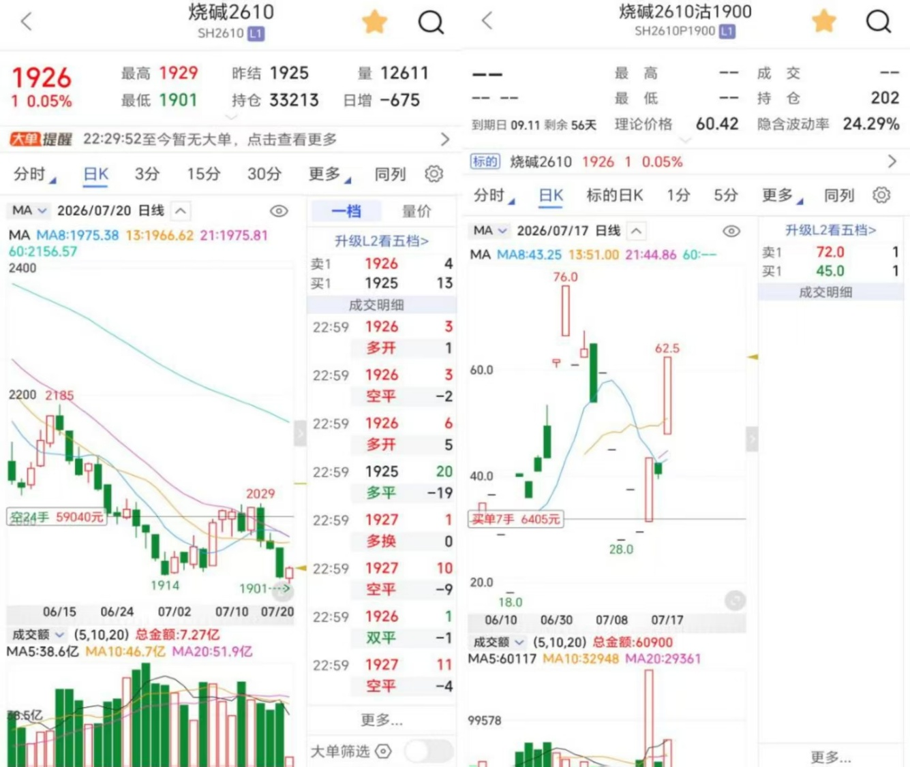
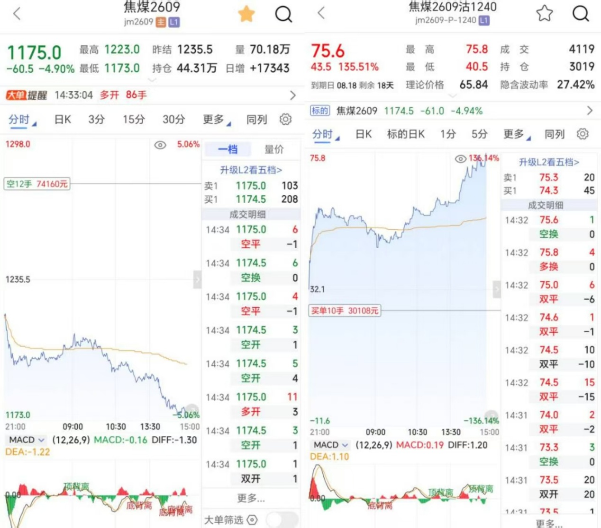

还有谁想得到期货市场里最伟大的秘密
如何拿到这些10W+以上利润的单子

亲爱的朋友：

这里有两张图片，准确的说，应该是四张图片，我把他们合并分别合并在了一起，我曾经用5000元的高价卖出过其中一张，为什么有人愿意花钱买一张图片呢？
因为这里面隐藏了期货市场里最伟大的秘密。
之所以又增加了一张，是想告诉你，期货市场和别的市场并没有什么区别，也是有规律的，我也想告诉你，这个世界上所有的问题都会有答案，只是看你能不能找到！
为了找到这两张图片里的秘密，我用了20年，而你却不需要这么久，因为我很快就会告诉你怎么做！
事情是这样的，和大部分人一样，最初我也只是想在股票市场赚点钱补贴家用，增加一个财富渠道，或许和你一样，我很快就陷入了亏损的深渊，我曾经尝试过各种办法，买过很多书，也花了不少学费参加各种培训，但始终没有结果。
高额的学费加上市场上的亏损，我损失了将近100多万的积蓄，更悲惨的是我又患上了冠心病和高血压，还有很重的颈椎病。
回想将近20年的交易，没有给我带来期望中的财富，反而毁掉了身体，蒸发了财富，也差点毁掉了家庭，好在我有一个好妻子，陪我度过了人生中最困难的一段岁月。
多年的亏损，让我开始冷静的审视自己，到底是哪里出了问题，虽然说投资市场永远都是“七亏二平一胜”，但我为什么不能成为其中的“一”呢？
中国的股票市场我不想多说，在这里我赚过钱也亏过钱，但总体还是亏的多，因为它的规则其实对散户并不公平，而期货远比股票更灵活、杠杆更高、品种更少、资金利用率更高，所以在综合考量之后，我还是选择了期货市场。
为什么？
期货市场和高考一样公平！
当年张雪峰曾经说过一段话，对我影响挺大的：
我们目前高中的很多课程，其实进入到社会100%是用不上的，但这就是国家选择人才的一种方式，你们能参加的高考是世界上最公平的考试！
期货也是一样，无论穷富，都可以凭借自己对市场的理解在这个市场里赚到钱！
那为什么会有那么多人亏损呢？
期货的难度不亚于考上清华或者北大，或者说更高！
如果学历能够决定你在市场里的高度，那么期货市场里会有很多“神”，但现实是很多高学历的人依然会在这个市场里亏很多钱，因为没人相信自己不聪明，总觉得自己会比别人聪明！
另外，期货市场非常考验人性，可以说，谁能掌握人性的弱点，谁就能在市场赚钱！
而悟道的这个过程，非常的煎熬，可能你和曾经的我一样，有很多次因为小幅的连续盈利就感觉自己已经完全掌握了财富密码，却在一次大的亏损中回吐了所有的利润并大幅亏损本金以至于被市场扫地出门。
初进期货市场，亏损自然如影随形，但我这个人天生偏执，越是难搞的事我越是去专研，转机很快就来了……
2018年我参加了一位期货前辈在深圳的一次培训，期间结识了很多的师兄弟，其中有好几个身价几百个甚至上千个的大佬，其实他们参加就培训无法三种目的：
- 1 假装自己爱好学习的（这种人会参加很多培训，但到最后依然难以克服人性还是亏损）
- 2 真正想提高自己的交易水平的
- 3 看看老师的水平怎么样，能不能合作的
如果你不曾参加过这样的培训，你很难知道这些，而类似的培训让我得到了什么收益呢？
那就是学会了站在更高的维度去看问题！
怎么说？
就是要站在大资金的角度去看待市场！
换句话说，大资金会在日内追涨杀跌吗？
真正的大资金一年下来很少开仓，或者说开仓之后可以潜伏几年，因为他们对于资金的收益率预期非常低，他们真正想要的只有一个字“稳“！
知道了这个秘诀，我也调整了自己的操作思路，更多的把精力放到了研究市场和人性。
你可能会说，我不是大资金，也没有那么多精力和时间去等待，你说的和我有什么关系呢？
不要着急：
我马上就会告诉你。
还记得我开头放了两张图吗？
我们就从这两张图说起：
首先，为什么我会选择这两个品种呢？
今天先破解一个，焦煤：
你首先要了解焦煤是做什么用的，这就需要你对它的基本面有所了解，在这里我就不做科普了，有很多渠道可以了解，然后就要从国家产业政策方面去了解它未来的行情可能会怎么走，这样我们就有了大的方向。
其次，你要知道什么时候进场，什么时候出场，有很多人会说，我进场的位置比你还好就是没拿住单，其实行情怎么可能会以直线方式运行，必然有波浪，而一旦你有看懂行情的能力，主力的洗盘其实给了你错过行情之后上车的机会或者你可以高抛低吸而不是因为恐惧利润的回撤而被洗出去。
再次，如果我们看懂了大方向，是可以同步布局认沽或者认购期权的，这就让我们的交易变得非常简单！
当然，这其中有非常多的细节，比如如何选择合约、如何选择周期、如何选择最佳的入场位置、如何克服交易中的贪婪与恐惧以及如何分配仓位等等。短短一篇文章是很难解释清楚的，因为每个人的情况不同，每个人的具体操作方法肯定也是不一样的。
而一旦你能够掌握这些秘诀，你再也不会为找不到自己最适合操作的品种而发愁，你不再预测行情，而是接受概率，允许判断出错，你能够区分机会与诱惑，只做自己体系内的行情，愿意用更多的时间去等待，不再期望每一次的交易都能够盈利，而是把亏损当做正常的交易成本，也就不会抗拒亏损，你会知道在期货市场里，最重要的是控制风险，生存永远大于暴利！
不仅如此，你的交易频次会逐渐降低，无效的开仓越来越少，而一旦开仓就已经能够锁定胜利！
更重要的是你开仓前会定好进、止、盈全套计划，盘中只负责执行，止损不心疼，盈利拿的住，不在因为贪婪和恐惧而胡乱交易。
你不再追逐秘籍、内幕消息，向内求规则与自律，把交易当成是生意，摒弃一夜暴富幻想，总之一句话，你就是万里挑一的期货传奇！